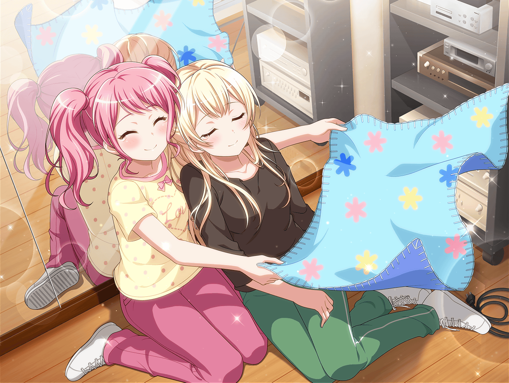

羽沢珈琲店
千聖
こんにちは、つぐみちゃん
つぐみ
あ、千聖さん！ いらっしゃいませ！
千聖
花音と待ち合わせをしているのだけど、もう来ているかしら？
つぐみ
花音さんならまだ来てないですよ。
お席にご案内しますね
千聖
ええ、ありがとう
千聖
……あら、蘭ちゃん。あなたも来ていたのね
蘭
あ、どうも。
この間はライブに招待してもらって、ありがとうございます
千聖
Afterglowの皆には楽曲の件でお世話になったもの。
つぐみちゃんも蘭ちゃんもライブは楽しんでもらえたかしら？
つぐみ
はい、とっても！
みんな、キラキラしてて衣装もかわいかったです！
ねっ、蘭ちゃん？
蘭
はい、いい意味で思ってたのと違ったっていうか、
ファンの熱気がすごかったです
蘭
みんな楽しそうだったし、ファンのほうを向いて
ライブをするってこういう感じなんだって
千聖
楽しんでもらえたなら、良かったわ
蘭
あ、ただ、もうちょっと……
千聖
もうちょっと……？
つぐみ
ら、蘭ちゃん……？
蘭
あ、いえ、なんでも……その、そういえば、
ライブで『Y.O.L.O!!!!!』やってくれましたよね？
つぐみ
うん！ うれしかったよね！
つぐみ
あんなにたくさんのお客さんの前で、
自分達の作った曲を聴けるなんてすごいなって
蘭
それに前聴いた時と曲の感じが変わってて面白かったです。
なんだろ、気持ちの入り方が変わったっていうか……
千聖
気持ちの入り方……？
蘭
その、うまく言えませんけど……
歌も演奏も前より感情が乗ってるような感じがして
蘭
あっ、別に前はそうじゃなかったってわけじゃなくて……！
千聖
ふふ、わかっているから気にしないで
千聖
でも、そういうふうに曲が聴こえたのだとしたら、
それは……いろいろあったからかもしれないわね
蘭
いろいろですか……？
つぐみ
結成の時のこと聞いてるし、パスパレの人がそう言うと、
また大変なことがあったのかなって思っちゃうね……
千聖
大変じゃなかったとは言えないけれど、
意味のある出来事だったと思うわ
千聖
自分の世界の中だけで生きてきた私が、
外へ踏み出すきっかけをもらえたもの
千聖
おかげで、狭い世界で生きていたことを改めて実感したわ
つぐみ
狭い世界……？ あの、千聖さんは
私達よりずっと広い世界にいると思いますけど……
蘭
芸能人だしね
千聖
いえ、そういうことじゃないのよ
千聖
何をしていても自分の限界を作って、そこから
出なかったら閉じこもっているのと一緒でしょ？
千聖
今までの私はそうだった。
でも、今回のことで少し変われた気がするの
千聖
前より『Y.O.L.O!!!!!』の歌詞を身近に
感じられるようになったのはきっとそのせいね
千聖
いつもの夕焼け空も素敵だけれど、
紺碧の夜空の美しさは先へ進まなければ見れない
千聖
今なら、あの歌に込められた気持ちがよくわかるわ
千聖
あの歌は、紺碧の夜空に踏み出す人に寄り添ってくれる素敵な歌ね
つぐみ
千聖さん……
蘭
そう言ってもらえるなら、あの曲を作って良かったです
千聖
……ただ、変わっていくというのは難しいわね
千聖
先日のライブも、バンドとしては反省点が多いものだったもの
つぐみ
えっ？ とってもいいライブだと思いましたけど……
千聖
でも、もっと良くすることができたと思うの。
演奏の面でも見せ方の面でも
千聖
できることはしたつもりだったけど、
理想のステージにするにはまだ足りなかったわね
千聖
蘭ちゃんがさっき言いかけたのは、
そういうことじゃないかしら？
蘭
えっ、あ、はい……
蘭
なんとなくですけど……パスパレの皆さんなら、
もっとレベルの高いライブもできるような気がして……
つぐみ
でも、カッコいいです！ あれだけのライブをして、
もっといいライブにしたいだなんて！
千聖
ええ、今度、ライブに招待する時は、
もっと素晴らしいステージにしてみせるわ
千聖
次こそ蘭ちゃんから『あの言葉』をもらえるようにね
蘭・つぐみ
あの言葉……？
蘭
なんです、あの言葉って？
千聖
ふふ、さあ何かしらね。それは言わないでおくわ